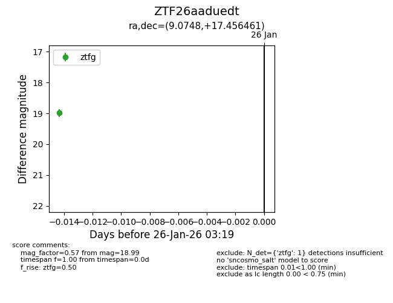
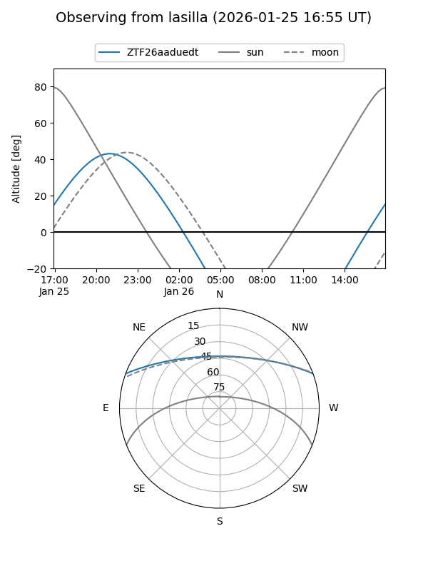
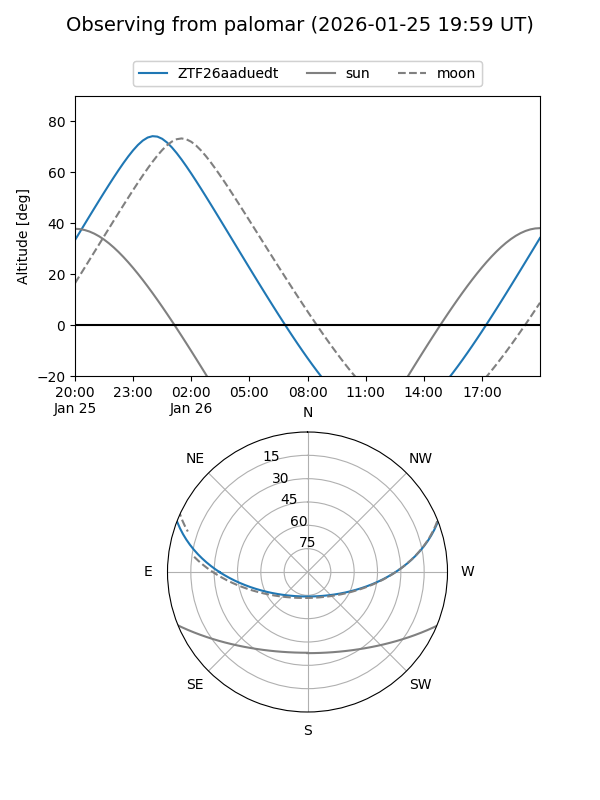

ZTF26aaduedt
Target ZTF26aaduedt at 2026-01-26 03:21
Aliases and brokers:
FINK: link
Lasair: link
ALeRCE: link
alt names
ZTF26aaduedt (ztf,fink_ztf)
Coordinates:
equatorial (ra, dec) = 9.0748,+17.45646
equatorial (HMS+DMS) = 00:36:17.95,+17:27:23.26
galactic (l, b) = (117.7992,-45.26436)
Flags:
Photometry:
last ztfg=18.99
1 ztfg detections
Lightcurve

Visibility


Additional plots